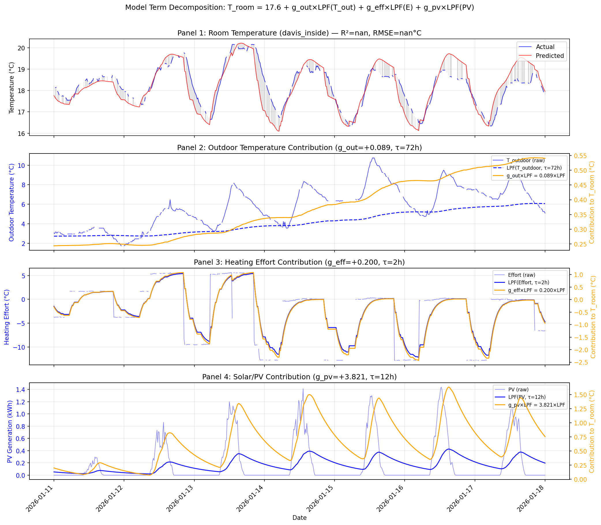
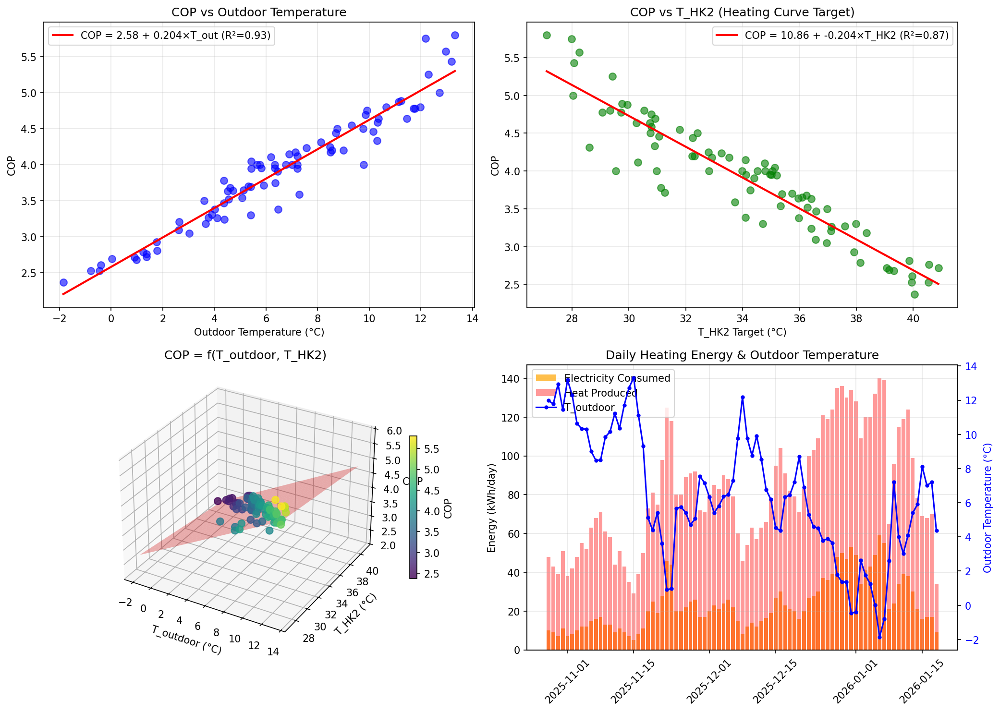

This is the model used in Phase 4 optimization. It accounts for controllable
parameters (Tsetpoint, kcurve) that affect Tflow → COP → energy consumption.
This simplified model ignores controllable parameters and is used only for computing
"heating effort" as a diagnostic signal for thermal response analysis.
τeff: 4-48h — rooms respond faster to heating changes
τpv: ~24h for all rooms — consistent solar response time
Weighted Average Model Performance
Overall weighted R² = 0.698
Implications for Optimization
Pre-heating timing: With τeff of 4-48h, rooms need advance notice
to reach target temperature
Solar preheating: Positive gpv means rooms benefit from solar gain.
Schedule comfort periods during/after sunny periods.
Room variation: Different rooms respond differently to heating based on geff.
Figure 18: Thermal model: heating curve (left),
actual vs predicted scatter (middle), time series validation (right).
Model Term Decomposition
The following figure shows how each input term contributes to the predicted room temperature
over a representative one-week period. Each panel shows the raw input signal (blue, left axis)
and its contribution to the room temperature prediction (orange, right axis):

Figure 18c: Model term decomposition for a representative week.
Panel 1: Actual vs predicted room temperature. Panel 2: Outdoor temperature contribution.
Panel 3: Heating effort contribution. Panel 4: Solar/PV contribution.
3.2 Heat Pump Model
COP Analysis
Metric
Value
Notes
Mean COP
3.91
Good efficiency for air-source heat pump
COP Range
2.37 – 5.80
Varies with Tout and THK2
∂COP/∂Tout
0.2039 COP/°C
Increases with warmer outdoor
∂COP/∂THK2
-0.2042 COP/°C
Decreases with higher flow temp
COP Model
Multi-variable regression model:
COP = 4.12 + 0.1689 × Tout + -0.0384 × THK2
R² = 0.935, RMSE = 0.199
Capacity Analysis
Metric
Mean
Max
Min
Daily electricity consumed (Eelec)
23.4 kWh
59.0 kWh
5.0 kWh
Daily heat produced (Qheat)
82.0 kWh
140.0 kWh
29.0 kWh
Compressor runtime (tcomp)
2.1 h/day
2.8 h/day
—
Relationship: Qheat = COP × Eelec
Buffer Tank Dynamics
Metric
Value
Mean Tbuf
35.9°C
Range
20.2 – 55.5°C
Variability (σ)
5.97°C
Implications for Optimization
COP optimization: Lower THK2 improves COP.
With ∂COP/∂THK2 = -0.2042, reducing THK2 by 5°C improves COP by ~1.02.
Timing strategy: Run heat pump during warmest Tout (daytime/solar hours)
for better COP. Each +1°C outdoor improves COP by ~0.204.
Capacity headroom: Max observed 59 kWh/day
suggests capacity is sufficient for current heating demand.
Buffer utilization: Buffer tank (mean 36°C)
provides thermal storage for load shifting.

Figure 19: Heat pump analysis: COP vs outdoor temperature (top-left),
COP vs T_HK2 (top-right), 3D COP surface with regression plane (bottom-left),
daily energy with outdoor temperature overlay (bottom-right).
Data Limitations: Sensor data covers only 64 days of overlap with energy data.
Seasonal coverage is limited to autumn/early winter. Models should be validated with
additional data as it becomes available.
Key Equations
Thermal Model
Time constant: τ = C/UA ≈ 54-60 hours
Discrete temperature change (per 15 min):
ΔT = a × (T_flow - T_room) - b × (T_room - T_outdoor) + c × PV
Where:
a = heating coefficient (~0.005 K/15min/K)
b = loss coefficient (~0.005 K/15min/K)
c = solar gain coefficient
Timing Strategy: Shift heating to solar hours (10:00-16:00) to maximize COP
(warmer outdoor temps) and direct PV consumption. Running at midday vs midnight
could improve COP by 0.5-1.0 (15-25% more efficient).
Flow Temperature: Reduce flow temps where possible to improve COP.
Each -1°C improves COP by ~0.10. Reducing curve rise by 0.1 saves ~0.8°C flow temp.
Pre-heating: With ~54h time constant, building responds slowly.
Start comfort mode 2-3 hours before needed for gradual warm-up during solar hours.
Buffer Tank: Charge during peak PV (12:00-15:00) to store thermal energy
for evening heating. Buffer can bridge 2-4 hours of heating demand.
Evening Setback: Can start eco mode 1-2 hours before bedtime.
Room temp drops only ~0.5-1°C before sleep due to high thermal mass.
Phase 4: Optimization Strategy Development
The models developed here feed into Phase 4, where we will:
Develop rule-based heuristics using the model parameters
Quantify expected energy savings from each strategy
Prepare parameter sets for the randomized intervention study (Phase 5)
For detailed model documentation, see:docs/phase3_models.md